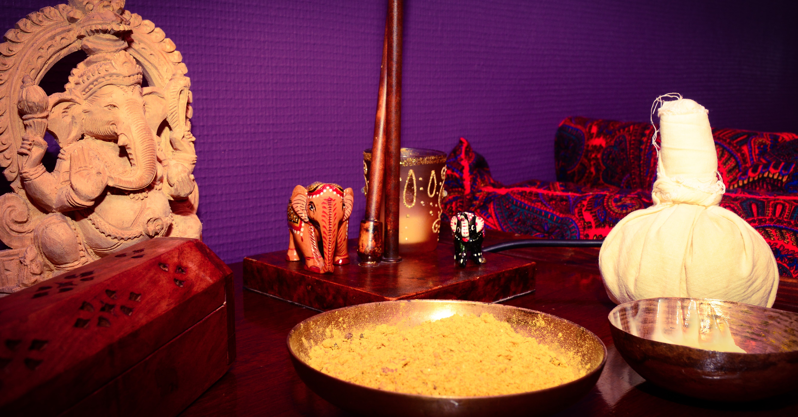

L’ayurveda, "science de la vie", science de la longévité, est une des plus vieilles médecines. Elle repose sur trois grands principes : la globalité de l’être humain, l’individualité et l’hygiène de vie.
C'est une médecine préventive, c’est-à-dire qu’elle nous aide à rester en bonne santé, et à ne pas développer diverses maladies.
Il repose sur une analyse de votre alimentation, votre physique, votre physiologie, votre psychologie, ainsi que les diverses maladies que vous avez eu, ou avez.
Il permet d'établir votre profil doshique, c’est à dire les prédominances de certains éléments dans votre corps : êtes-vous plus Vata (éther et air), Pitta (feu et eau) ou Kapha (eau et terre).
L’alimentation est la base d’une bonne hygiène de vie en ayurveda. "Ton aliment est ton médicament" disait Hippocrate, c’est également vrai en ayurveda. D'après l'ayurveda, beaucoup de maladies s’installent du fait d’une mauvaise digestion et d’une mauvaise assimilation. C’est pour cela qu'une bonne santé passe d’abord par une bonne alimentation et une bonne digestion.
Tarif Diagnostic: